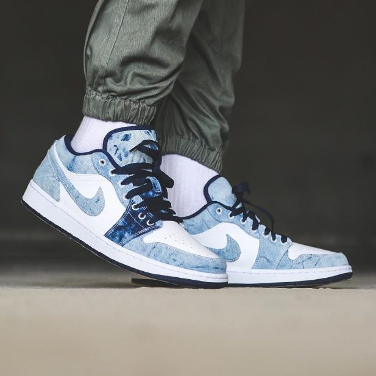

The Nike Air Force 1 was released in 1982, and they were the first basketball shoe to feature Nike Air cushioning. Since the original model, the Air Force 1 has been released in various materials and color schemes. The most popular Air Force 1 color is white. The red and blue models are also popular.

The Nike Dunk’s design is made up of a simple silhouette and some bold colors. It has a waffle sole and checkerboard pattern on the rubber outsole. The Dunk Low is very comfortable for everyday wear. The Nike Dunk Low was first released in 2003 and has been a fan favorite ever since. With their simple design and bold colors, you can’t help but love these shoes.These shoes are available in all kinds of different colors and styles, making this shoe one of the best by Nike. Nike Dunk Low shoes are perfect for skateboarding or just for casual wear. You can find a pair for everyone in your family.
The Nike Air Jordan 1 low SE is the best-selling shoe of all time. It is named after Michael Jordan, who played in it for years. The original Jordans were made of canvas, but they have now moved to leather. They are designed to give you the best support and stability possible for running and jumping. They come in various colors and styles, which allows you to choose one that suits your style. In addition, the Nike Air Jordan 1 low SE special edition was released to honor Michael Jordan’s legendary sports career. This shoe is made with premium leather, giving it durability.